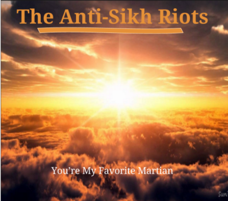

Challenge: Design a Band
Challenge information
In this challenge we use design thinking in our process of creating our own band plus our first album cover. Design thinking would be a process that allows us to build up ideas without any limits using outside resources into the mix. Specifically, it mainly concentrates on empathy. What is empathy got to do with design think you ask. Well, we use empathy to determine the user's needs to solve the problem. The steps to DEEP design thinking are: Discover, Empathy, Experiment and the Produce. We are studying this because colors for example give off a feeling that people want in music which gives a maybe either positive or a negative vibe that a consumer takes in. The steps I used to create my band is to first study peoples favorite color, create two different albums that people will look at. Then, we create an experiment of whether which album cover they like the most. Finally, we determine the most number of votes for each album and choose our final product. This is how I made my band album cover.
Album Cover
Band Biography
The Anti-Sikh Riots started out with a mob which consists of mostly members of the Congress party reacting to the assassination of Indira Gandhi by her bodyguards. Paul Schneider was one of those members, pretty unsure about the reason he is fighting for. In his eyes, he saw a horrifying sight, many people killed with guns shooting from all directions. The members with him saw it as a triumphant war about to be won. About 2800 people were killed and 2100 were kill from Delhi as well. As one of his friends got shot, he decided to flee from the madness to a more peaceful zone. When he saw other people as well fleeing from the mob, they formed a relationship. They talked a lot about the way they have been treated and based it off of their religion. As they formed their relationship, they found out that they all like to play an instrument and Paul Schneider was a great singer. They realized that instead of being violent, they can just create their own band to support the cause with a more peaceful approach. They created the name “The Anti-Sikh Riots” and as their album, they called it “You’re My Favorite Martian” since they have a religious side to support their cause. And that is how it came to be.